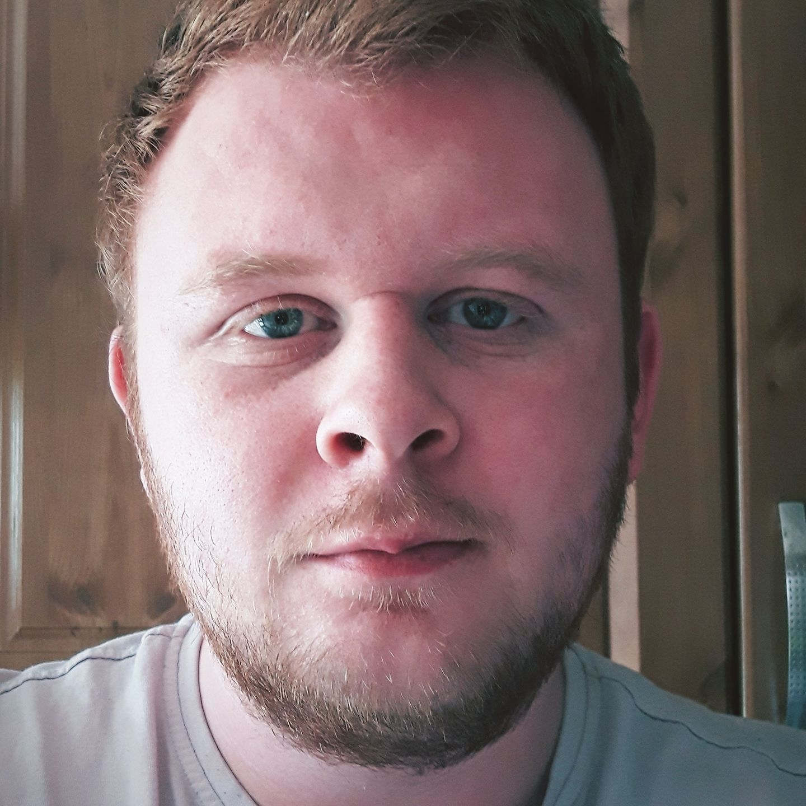

My Resume

Summary of Myself
Hello there, my name's Ben. I've decided to go on quite the journey to
become a software engineer with the end goal to become an extremely
competent programmer with a great WFH job to suit family life.
Education
- Kings Park Primary School
- Lurgan Junior High School
- Craigavon Senior High School
- Southern Regional College
- Udemy !
Work Experience
- HCL Call Centre - BT/Vodafone/TalkTalk/Eircom
- Wesser LTD
- Wider Horizons Youth Work
- Seapatrick Care Home
- Xtra Vision
- Maloney's Restaurant Kitchen Assistant
- Romtech Welding
- Classic Mineral Water
- Craigavon Garden Crafts Landscaping
School Qualifications
GCSE
- English - C
- Maths - C
- Science - D
- French - B
- ICT - B
- History - D
- Business Studies - E
- LLW - C
Skills & Qualifications
- Irish Red Cross level 1-3 completed
- Youth and Development OCN level 1,2 & 3
- Mouse Certification
- Coach & Skills Instructor Certified